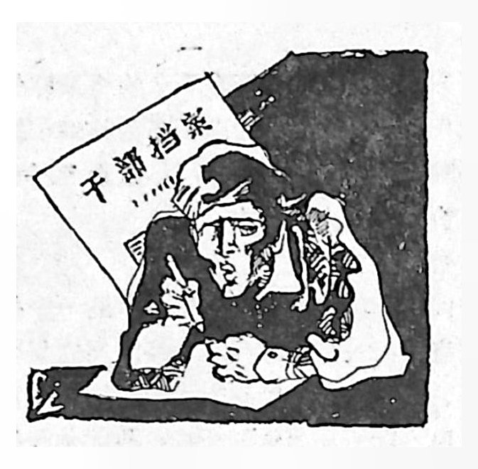

佚名 《人事》1986年第7期（总第10期），第44页
邪念恶行（题图）
Wicked Thoughts and Deeds (header illustration)
- Text in the drawing
- 干部档案
Cadre dossier - Passage illustrated
想到那天李彩琴办理调动手续那样简便，王守平产生了伪造证件，由农民转为国家干部的邪念。
Remembering how easily Li Caiqin's transfer papers had gone through, Wang Shouping conceived the wicked idea of forging documents to turn himself from a peasant into a state cadre.From the report 邪念恶行 (“Wicked Thoughts and Deeds: How Wang Shouping's ‘Cadre Dossier’ Was Forged”) by Jin Zhong and Shi Qing, on the same page. 晋仲、施青《邪念恶行——王守平的“干部档案”是怎样伪造出来的》，同页
- Description
- Header illustration for a report on a peasant who forged a cadre dossier: a hunched figure clutches a sheet labeled 干部档案.
- Note
- The 干部档案 (cadre dossier) was the personnel file that followed every cadre and determined status, pay and transfers.
- Artist
- Unattributed 佚名
- Published in
- 《人事》1986年第7期（总第10期）, p. 44
- Themes
- Paperwork and documents · Story illustrations

Cite
Unattributed, “邪念恶行（题图）” [Wicked Thoughts and Deeds (header illustration)], Renshi (Personnel) 《人事》, 1986, no. 7, p. 44.